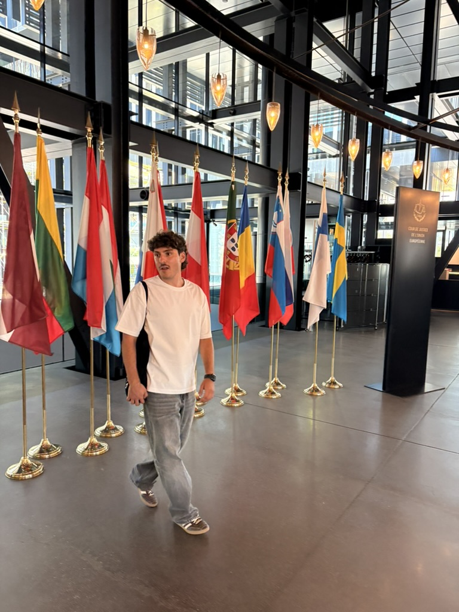
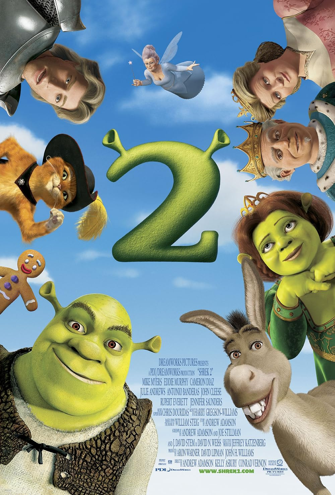
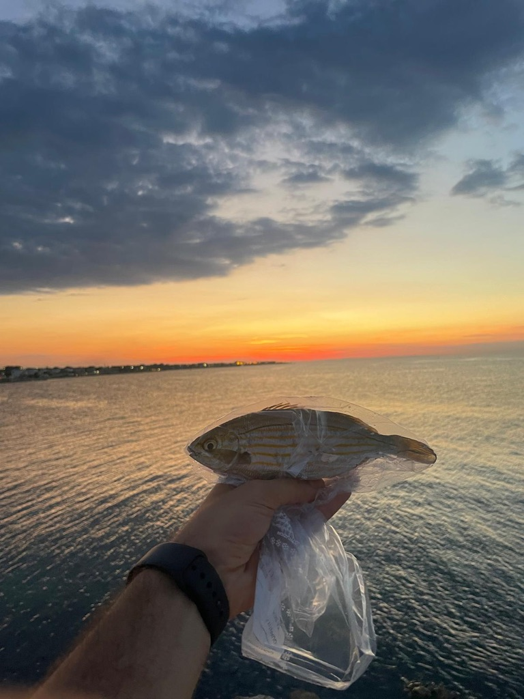
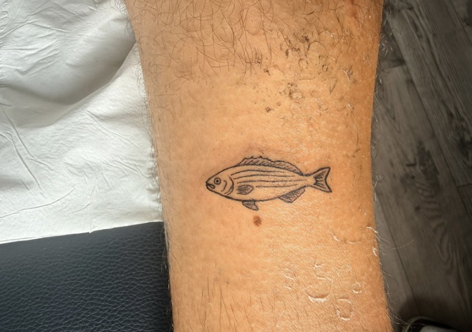

Ott 2022 — Mar 2026
MSc in Ingegneria Informatica
Artificial Intelligence and Data Analytics · Politecnico di Torino
Votazione 108/110. Tesi svolta all'ETH di Zurigo (lug 2025 – mar 2026).
ETH Zürich · Photogrammetry & Remote Sensing
Computer Vision & 3D Deep Learning Researcher
Insegno alle macchine a capire lo spazio: ricostruzione 3D feed-forward e segmentazione delle scene, senza etichette 3D.

01 — Chi sono
Lavoro sulla ricostruzione 3D feed-forward e sulla comprensione semantica delle scene: in pratica, provo a far sì che un modello guardi una manciata di immagini e ne ricavi una scena tridimensionale coerente, con gli oggetti al posto giusto e riconosciuti come tali.
Ho conseguito la laurea magistrale in Ingegneria Informatica (Artificial Intelligence and Data Analytics) al Politecnico di Torino con 108/110, svolgendo la tesi all'ETH di Zurigo. Da lì la collaborazione è continuata: oggi sono Research Collaborator nel gruppo di Photogrammetry & Remote Sensing dell'ETH.
Vivo a Bari, sono cittadino UE e sono disponibile a trasferirmi ovunque. Cerco posizioni orientate alla ricerca o un dottorato finanziato dall'industria nel campo della percezione 3D e del representation learning.
02 — Ricerca
Dalla ricostruzione geometrica alla semantica: percorso accademico, progetti e competenze tecniche.
Mar 2026 — oggi
Photogrammetry & Remote Sensing (D-BAUG) · da remoto
3D-Consistent Instance Segmentation on Frozen Feed-Forward Backbones
Lug 2025 — Mar 2026
In collaborazione con il Politecnico di Torino
Towards Multi-View 3D Instance Segmentation via Semantic Distillation
Ott 2022 — Mar 2026
Artificial Intelligence and Data Analytics · Politecnico di Torino
Votazione 108/110. Tesi svolta all'ETH di Zurigo (lug 2025 – mar 2026).
Ott 2019 — Ott 2022
Politecnico di Bari
Scambio Erasmus alla Universitatea Tehnică din Cluj-Napoca, Romania (ott 2021 – lug 2022).
Giu 2024
Ottimizzazione di modelli di anomaly detection per inferenza in tempo reale su dispositivi embedded a bassa potenza, in ottica di guida autonoma.
Mar 2024
CVAE per la generazione di serie temporali sintetiche per singola macchina e singolo sensore, sviluppato con un partner industriale e integrato nel loro framework.
03 — Oltre la ricerca
Un training serio dura ore. Nel frattempo, bisogna pur fare qualcosa.
Squadra amatoriale, ambizioni da Champions League. Ho creato e gestisco da zero tutta la presenza online: pagina Instagram, sito ufficiale e TikTok. Curo contenuti, grafiche e cronache delle partite — il mio unico progetto in cui le metriche di valutazione sono le visualizzazioni e non la mAP.
Record personale: Campione Grandioso. Anni di ottimizzazione degli iperparametri del mazzo, valutazione rigorosa in condizioni avverse e una tolleranza al rumore statistico costruita partita dopo partita. Se volete verificare, il tag è pubblico.

Non il primo: il secondo. Ci sono discussioni che non sono disposto ad avere. Il sequel migliora tutto quello che c'era prima, regala al mondo il Gatto con gli Stivali e ha una colonna sonora che regge dopo vent'anni. Se serve un argomento per rompere il ghiaccio, questo funziona sempre.


Alzarsi prima dell'alba per stare fermo su uno scoglio ad aspettare: dopo mesi passati a fissare curve di training, è terapia. Il mio primo pesce mi è piaciuto al punto che me lo sono fatto tatuare sull'avambraccio. Mia nonna ha commentato che «sembra un ricamo», e da allora non riesco più a vederlo diversamente.
Sì, davvero: tre palline in aria contemporaneamente. È l'unica forma di multitasking in cui riesco davvero bene, ed è sorprendentemente utile per spiegare cosa succede quando devi tenere traccia di più oggetti che si muovono nello spazio. Su richiesta, dimostrazione dal vivo.
La mappa richiede JavaScript.
04 — Contatti
Posizioni di ricerca, dottorati finanziati dall'industria, collaborazioni o semplicemente due parole sulla visione 3D: scrivetemi pure.